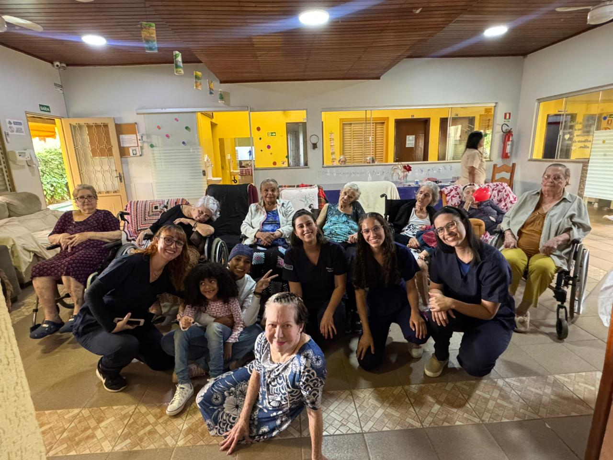

Intervenções de Enfermagem na Promoção de Oficinas de Motricidade e Cognição
Este projeto de extensão da Universidade Católica de Brasília, Curso de Enfermagem, visa promover o cuidado integral à saúde da pessoa idosa, com foco em intervenções de enfermagem para estimular a motricidade e cognição.
Realizamos diversas oficinas e atividades lúdicas na Casa do Vovô, em Vicente Pires, Distrito Federal, buscando aprimorar a qualidade de vida, o bem-estar e a socialização dos idosos.
A equipe do projeto de extensão em um momento de confraternização com os idosos, celebrando a alegria e os resultados alcançados.
O envelhecimento é um processo complexo que acarreta transformações físicas, psicológicas e sociais. A lei 10.741 de 2003 (Estatuto do Idoso), alterada em 2022 para “pessoa idosa” (Lei 14.423), garante direitos e destaca a responsabilidade do poder público, comunidade e família na promoção da qualidade de vida. Compreender o idoso de modo integral, focando no processo de envelhecimento e não apenas na doença, é fundamental, especialmente frente a distúrbios funcionais e alterações naturais da idade.
As atividades lúdicas são ferramentas essenciais para a melhoria da autoestima, redução de fatores estressores, minimização da ansiedade e angústia. Elas permitem a expressão de sentimentos, comunicação e interação social, promovendo o desenvolvimento de afetividade e estimulando funções psíquicas e cognitivas.
Durante a visita à Casa do Vovô em Vicente Pires, foi identificada a necessidade de diversos estímulos para os idosos, incluindo:
Diante dessas problemáticas, o projeto de extensão busca atuar com intervenções de enfermagem para suprir essas demandas.
Realizar intervenção de enfermagem na promoção de oficinas de motricidade e cognição para idosos na Casa do Vovô em Vicente Pires.
Esperamos que, ao longo das oficinas, possamos contribuir para um maior estímulo cognitivo e motor, incorporando uma rotina de mobilidade e atividades cognitivas para proporcionar uma maior qualidade de vida e bem-estar, impactando positivamente nas atividades diárias de vida dos idosos.
A metodologia aplicada no projeto foi a pesquisa e ação, através de intervenções de enfermagem com práticas lúdicas, jogos coletivos, atividades individuais e manuais, visando solucionar as problemáticas relatadas pela Instituição e promover qualidade de vida e bem-estar para os idosos.
Cada dia de visita contou com uma temática e práticas diferentes, trabalhando diversas formas de atividades. O período de intervenção foi de Abril e Maio de 2025.
| Data | Ações | Responsável |
|---|---|---|
| 12/04/2025 | Atividade de Socialização: Conhecer os idosos, suas rotinas e toda a equipe multidisciplinar. | Gislene Maia |
| 26/04/2025 | Atividade: Interação e Vivência - Acolhimento. Incluindo a dinâmica "Teia do Envolvimento", Dança Engraçada e Jogo da Memória. | Eduarda Sousa |
| 28/04/2025 | Atividade de estímulo motor e cognitivo: Alongamento com música ao ar livre, brincadeira de não deixar o balão cair com TNTs coloridos, caminhadas e orações na capela. | Angélica Cristina |
| 03/05/2025 | Atividade: "Dia da Beleza" - Promoção de bem-estar, autoestima e interação social com maquiagem e penteados, e sessão de fotos. | Gislene Maia |
| 05/05/2025 | Atividade Cognitiva e Física: Alongamento e percepção das cores (símbolos coloridos no chão com música), Atividade de Tato (Caixa Misteriosa), Caça-palavras e desenhos para colorir, Jogo da Velha com Bambolê. | Eduarda Sousa |
| 12/05/2025 | Atividades cognitiva e interativa (Jogos de mesa): Competição de quebra-cabeças, ensino e jogo de UNO, e outras opções como dominó, dama e baralho. | Grazielle Caldas |
| 17/05/2025 | Atividade cognitiva, motora, emocional e social: Estímulo da memória e percepção musical (adivinhar canções), e estímulo da expressão corporal e interação com dança e movimentos. | Déborah Freitas |
| 19/05/2025 | Encerramento: Confraternização de despedida com festa, música e dança. Entrega de lembrancinhas (livro de caça-palavras, santinho, bolinhas anti-estresse). | Angélica |
O projeto "Intervenções de enfermagem na promoção de oficinas de motricidade e cognição para idosos na Casa do Vovô" foi um sucesso notável, impactando positivamente a vida dos 46 idosos atendidos. Desde o início, a receptividade foi imensa, e as atividades foram recebidas com grande entusiasmo.
As sete etapas do projeto, da ambientação à confraternização final, foram cruciais para ampliar a socialização, estimular a motricidade fina e cognitiva, e reafirmar o autocuidado dos idosos. A flexibilidade da equipe em adaptar as dinâmicas (como na "Teia do Envelhecimento", onde o foco mudou para o compartilhamento de vivências felizes) foi essencial para o aprofundamento do vínculo e o engajamento dos participantes.
O impacto do projeto foi evidente em diversos momentos:
A alegria expressa pelos idosos na chegada da equipe e a demanda espontânea por encontros adicionais confirmam o valor das intervenções e o profundo impacto gerado em suas vidas. O projeto celebrou a vida e o potencial em todas as suas fases, consolidando o aprendizado da equipe sobre o cuidado integral à saúde do idoso com respeito e empatia.
Confira alguns dos momentos mais marcantes e inspiradores do nosso projeto, que ilustram a alegria, o engajamento e o carinho compartilhados em cada atividade.
Conheça os profissionais e estudantes dedicados que tornaram este projeto possível.
Este projeto foi desenvolvido por estudantes do Curso de Enfermagem da Universidade Católica de Brasília.
Para mais informações sobre o projeto ou a instituição, entre em contato:
📞 Telefone: (61) 3597-1698
📧 E-mail: casadovovo2@gmail.com / grandevobsb@gmail.com
📱 WhatsApp: +55 61 9 8578-2317
📍 Local: Grandevo - Centro Especializado em Idosos LTDA.
Rua 10B, Chácara 135, Lotes 1 e 4 - Vicente Pires, Distrito Federal.
Período da Intervenção: Abril e Maio de 2025.